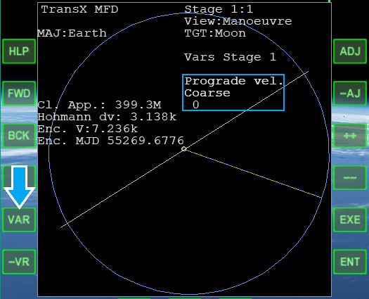

TransX MFDのマニューバ作成機能について説明します。
ここで書かれているのと同じ操作をする必要はありません。
一度だけざっくり読んでいただければ十分です。
エンジンを噴射して加速し、軌道を変化させることをマニューバ(Manoeuvre)と呼ぶ。
このチュートリアルにおいて、マニューバの作成とは、どのようなマニューバを実行するか決定することを意味する。
マニューバを作成・実行して、ほかの天体へと飛行する、周回軌道に投入することができる。
VWをクリック。
View:Manoeuvreにする。
++をクリック。
Manoeuvre modeをOnにする。
VAR or -VRをクリック。
これから説明する要素を選択する。

以下の要素を組み合わせて、予定通りの軌道になるようにマニューバを作成する。
| Prograde vel. | Prograde velocity |
| Man. date | Manoeuvre date |
| Outward vel. | Outward velocity |
| Ch. plane vel. | Change plane velocity |
宇宙船の速度ベクトルの方向へ加速する。
ProGrade or RetroGradeオートパイロットと同じ。
プラスの値なら前を向いて加速。
マイナスなら後ろを向いて加速する。（＝減速する）
マニューバ実行の日時。
「いつ」マニューバを実行するか決める。
MJD（修正ユリウス日）で表示される。
MJDでは「時・分・秒」は小数点以下で表示される。
12進法ではなく10進法なので注意。
例えば、MJDにおける111.1は、111日と2.4時間になる。
0.02はおよそ30分になる。
現在時刻より前の、過去の時刻を指定しないよう注意する。
現在時刻は画面右上の情報メニューに表示されている。
1枚目がOrbiter2010、2枚目が2016
軌道の外側／内側への加速。
プラスなら、軌道の外側に加速。
マイナスなら、軌道の内側に加速。
現在の軌道面に対して垂直方向に加速する。
Orbit Normalオートパイロットと同じ。
軌道面を変更するために使用する。
軌道面を変更することで、目標地点の真上を通る軌道にすることができる。
マニューバの要素を選択したら、必要な数値を入力する。
++でプラス方向に数値を変化させる。
--でマイナス方向に変化させる。
一部の機能は、++をクリックすることで実行できる。
感度を変更する。
(Adjust sensitivity)
++ or --をクリックしたときの変化を、小さく・大きくする。
以下の順番で小さくなる。
Rough > Coarse > Medium > Fine > Super > Ultra > Hyper > Micro
Resetを選択して++をクリックすると、初期値に戻る。
情報を更新して再計算する。
TransXは、その時点でのデータをもとに予測軌道を計算する。
時間経過によって計算結果は変わるので、マニューバの実行直前に再計算しておく。
VAR or -VRでこれを選択してから、++をクリックして実行する。
マニューバを作成したら、もう1つのMFDでFWDをクリック。
Stage 2にする。
目標に接近したときの予測軌道が表示される。
VWをクリックして、View:Encounterにする。
最接近時の高度などが表示される。
これらのデータを確認しつつ、マニューバを修正する。
| Focus PeD | Focus Periapsis Distance | 予測されるPeの、惑星中心からの距離 |
| Min Alt | Minimum Altitude | 最接近時の地表からの高度 |
| Offplane Dist | Off-plane Distance | 着陸目標から、自分の軌道までの距離。 これを小さくすれば、目的地の真上を通る軌道にすることができる |
View:Targetに切り替えて、エンジンを噴射する。
マニューバを作成したら、VWをクリック。
View:Targetに切り替える。
VAR or -VRを何度かクリック。
Auto-Centerを選択する。
++をクリック。
Auto-CenterをOnにする。
オートパイロットが宇宙船の姿勢を変更するのを待つ。
Begin Burnがエンジン点火までの残り時間。
0になったら加速を始める。
残りDelta Vが5になったら、噴射を止める。
Auto-Centerを選択して、++をクリック。
Offにする。
Manoeuvre modeもOffにしておく。
RCS LINを噴射して、手動で微調整する。
View:Encounterで結果を確認する。
マニューバを終了するときは、Auto-CenterとManoeuvre modeを必ずOffにする。
Auto-Centerのオートパイロットを解除しないまま放置すると、不具合が発生する可能性がある。
Manoeuvre modeでは、作成中のマニューバから予測される軌道を表示する。
これを解除しないと、実際の軌道を確認できない。